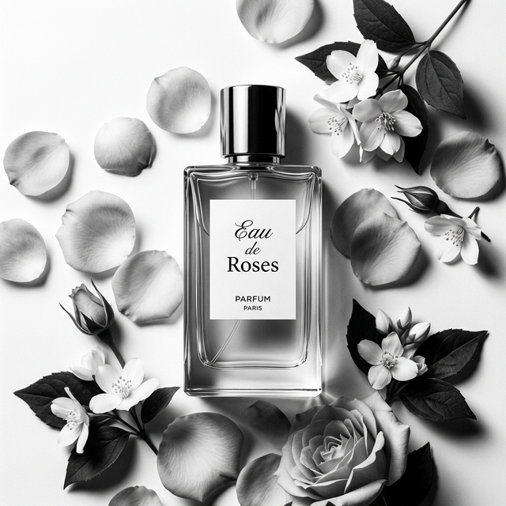

Eau de Roses

Description courte
Un parfum floral délicat aux notes de rose et jasmin, idéal pour le quotidien.
Notes olfactives
- Notes de tête
- Rose centifolia, Bergamote, Citron vert
- Notes de cœur
- Jasmin, Pivoine, Muguet
- Notes de fond
- Musc blanc, Bois de santal, Ambre doux
Description détaillée
Eau de Roses est une composition olfactive inspirée des jardins de Grasse. Les notes de tête dévoilent une fraîcheur de rose centifolia, suivie d'un cœur de jasmin et de pivoine. Le sillage se conclut sur un fond musqué doux et chaleureux. Ce parfum eau de toilette de 100 ml convient aussi bien aux occasions informelles qu'aux soirées élégantes.
Prix
- Prix HTVA :
- 54,17 €
- Prix TVAC (TVA 21 %) :
- 65,54 €
Disponibilité
Stock disponible : 12 unités